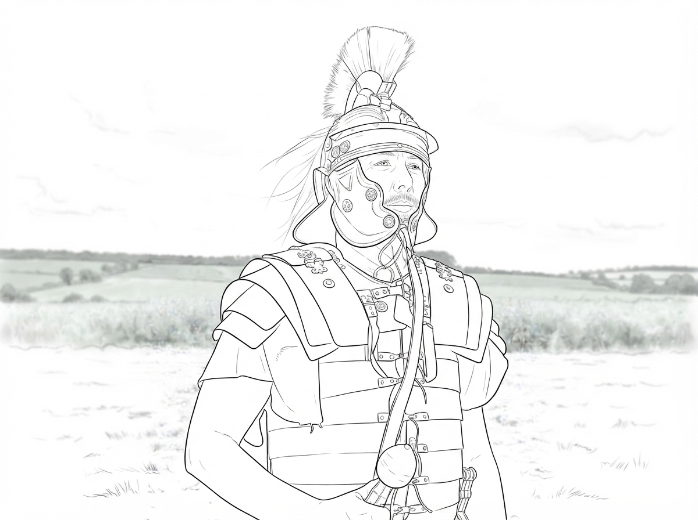
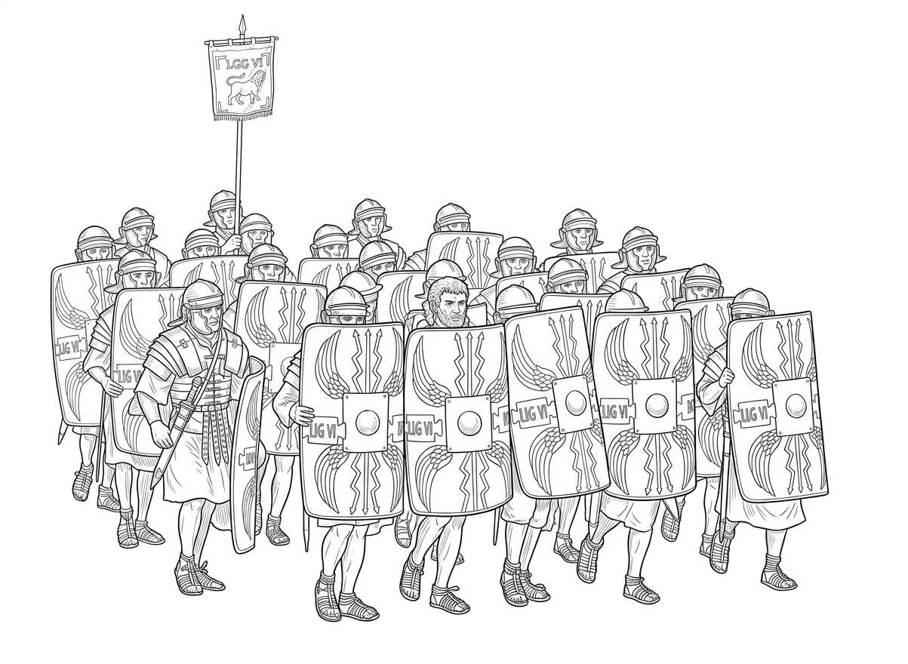
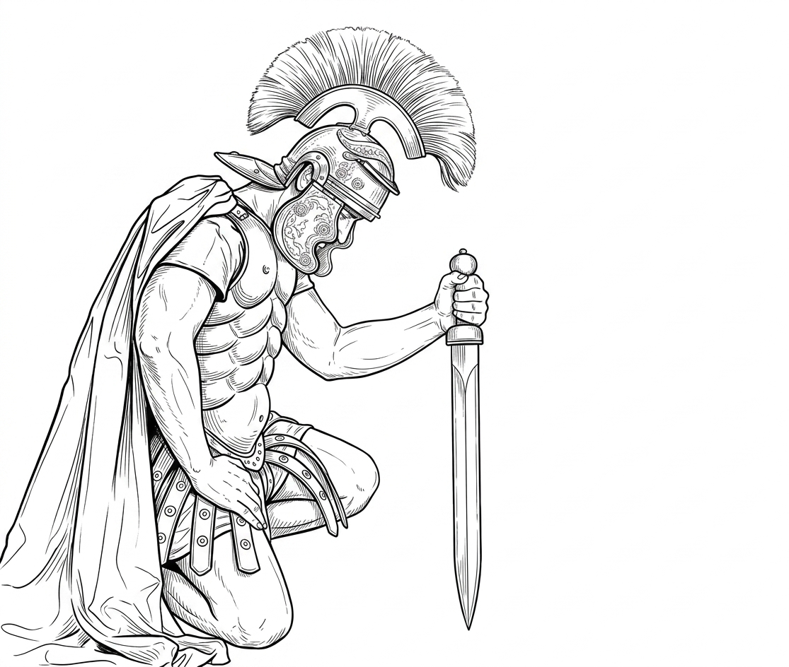

CHAPTER 03 OF 12

At the edge of the forest was the same valley I had seen the day before. I circled above it and recognized the familiar figure at once.
It was my Master.
I saw people gathering slowly from every direction. Some came down from the hills; others hurried along the narrow paths that wound through the valley. The valley, which had been so quiet the day before, was once again filling with the sound of human voices.
That day, I noticed several Roman soldiers patrolling in the distance. They stopped and watched the crowd from afar.
I saw their leader.
I heard the others call him “Centurion.”
So I assumed that was his name. He was not an ordinary soldier. He commanded a large company of men—perhaps a hundred or so.
We bald eagles often saw Roman soldiers. They marched from one town to another, their helmets and shields flashing beneath the sunlight. Centurion had joined the army when he was young. He had risen from an ordinary soldier to become an officer.
That day, he had been accompanying his soldiers on patrol. But when he heard the voice of Jesus, he gradually came to a stop. He stood at the edge of the crowd and said nothing.
He simply listened.
At first, his face still carried the expression of an officer on duty. From time to time, he glanced at the crowd and then back at Jesus, as though trying to determine what kind of man this teacher really was.
But after a while, his eyes no longer left Jesus. He listened carefully to every word. Sometimes his brow tightened. Sometimes he lowered his head in thought. Eventually, he even stepped forward a few paces, simply so that he could hear more clearly.
The soldiers standing beside him noticed. But they did not think it strange. Several of them talked among themselves, occasionally looking toward the crowd and then toward their commander. Only Centurion grew quieter and quieter. He was listening to a story unlike any he had ever heard.
And he began to realize that the words of Jesus were not merely being spoken to the crowd. They were entering his heart.

Centurion believed that there must be a supreme ruler over heaven and earth. He understood this because of the army. In the army, commands passed from one rank to another. Every soldier knew whom he was expected to obey and who had the authority to give him orders. A great army could have many soldiers, many officers, and many commanders. But in the end, everyone answered to a higher authority. So Centurion believed there was a God who had created heaven and earth and who ruled over all things.
But when Jesus began speaking of a “Father,” something in Centurion's heart was stirred.
He could understand a supreme God. He could understand a ruler who governed heaven and earth. But the thought that the Creator could become a Father to His creatures was something entirely different.
Jesus began telling the story of a prodigal son. A younger son left his father, squandered his inheritance, and eventually became so poor that he could do nothing but feed pigs in the fields. When he had nowhere else to turn, he remembered his father and decided to go home. While he was still a long way off, his father saw him. The father ran to him, embraced him, and kissed him again and again. He did not begin by demanding an account of his son's failures. Instead, he ordered his servants to bring the finest robe and put it on him, to place a ring on his finger, and to prepare a feast. “For this son of mine was dead and is alive again; he was lost and is found.” Centurion listened to the story without speaking for a long time.
The story touched something deep within him. He lowered his head, his eyes fixed upon the ground. He had left home when he was young. In the army, he had learned discipline and obedience. He had also learned how to make others obey him. He could understand a king. He could understand a supreme commander.
But he could not understand a father.
He spoke quietly to himself: “A great army can have many officers, but only one supreme commander. So God must be that supreme commander.”
Yet another voice within him tried to pull him back toward reality. “Life is simply harsh and practical.” “Do not be so naive.” As for the prodigal son in the story, Centurion thought the man was nothing more than an ungrateful fool.
And yet, at the same time, he understood exactly what Jesus was saying. The father's great compassion toward his son struck something deep within him.
Suddenly, Centurion remembered something that had happened many years before. He had been only a young soldier then. One day, he stole money from another soldier and was caught. He was severely punished and nearly lost his place in the army. His military instructor rebuked him harshly. But in the end, that same instructor took money from his own savings and paid the debt for him.
It was the first time Centurion had truly experienced kindness and mercy. He had carried that memory quietly within him ever since. And now, the story Jesus told had brought it back.
Over the years, Centurion had begun to feel that his heart was like barren soil, hardened and parched beneath the wind. Outwardly, it remained. But inwardly, it had become dry. He had become a slave to life itself. When he was young, he had been an ambitious adventurer. Now he was little more than a weary wanderer. He had forgotten that, deep within him, he had once longed for the warmth of a father's embrace.
But now, the heavenly Father Jesus spoke of awakened that long-forgotten longing. If such a Father truly existed, how should he respond?
He told his doubts to Titus, who was standing beside him. But Titus was not moved by what he heard. Instead, he firmly rejected the message of Jesus.
“I will never believe it,” he said.
“My father abandoned me when I was very young. That is why I joined the army. I hate him.”
Centurion understood Titus. Because that kind of pain was real. He did not blame him.
Centurion said, “I think there are many kinds of fathers on earth. But the Father in heaven is different. He is perfect.”
“Perhaps we must first know that perfect Father in heaven before we can truly understand what an earthly father ought to be.”
Titus still could not accept it.
Centurion did not argue with him. He simply said to himself, “Just because I have never experienced something does not mean it does not exist.”
“There are many things that can be learned.” And then, once again, he told himself, “I can learn.”
He had always been a disciplined man. So he decided to follow the prayer Jesus had taught. That day, he stepped aside, lowered his head, and knelt upon the ground.
For the first time, he tried to speak to his Father in heaven. With reverence, he recited the prayer Jesus had taught His disciples. From a distance, some of the people saw the Roman officer kneeling. Some assumed he was reporting something to a superior.
But Centurion felt something changing within him. To become a child of the heavenly Father was an identity that gave him a dignity he had never known. It was a dignity that none of his achievements could ever give him.
For the first time, he understood that a person's worth does not come from rank, military victories, or the approval of a general. It comes from knowing whose child he is. The dignity he had spent his whole life pursuing was nothing compared with the dignity of being a son.
He rose to his feet and looked up at the eagle circling in the sky.
I saw his face. There was a steadiness in his expression, a quiet strength, almost the bearing of a prince. I do not know how the human heart changes. But I knew that the man before me was no longer the man I had watched before. In the days that followed, his soldiers began to say that he was less difficult to be around. He had become gentler. More approachable.
I watched him recite the Lord's Prayer each day:
“Our Father which art in heaven,
Hallowed be Thy name.
Thy kingdom come.
Thy will be done in earth, as it is in heaven.
Give us this day our daily bread.
And forgive us our debts, as we forgive our debtors.
And lead us not into temptation,
but deliver us from evil.
For Thine is the kingdom,
and the power,
and the glory,
for ever.
Amen.”

Fly over and answer five questions about "The Story of Centurion" to earn stars!
Fly to get stars